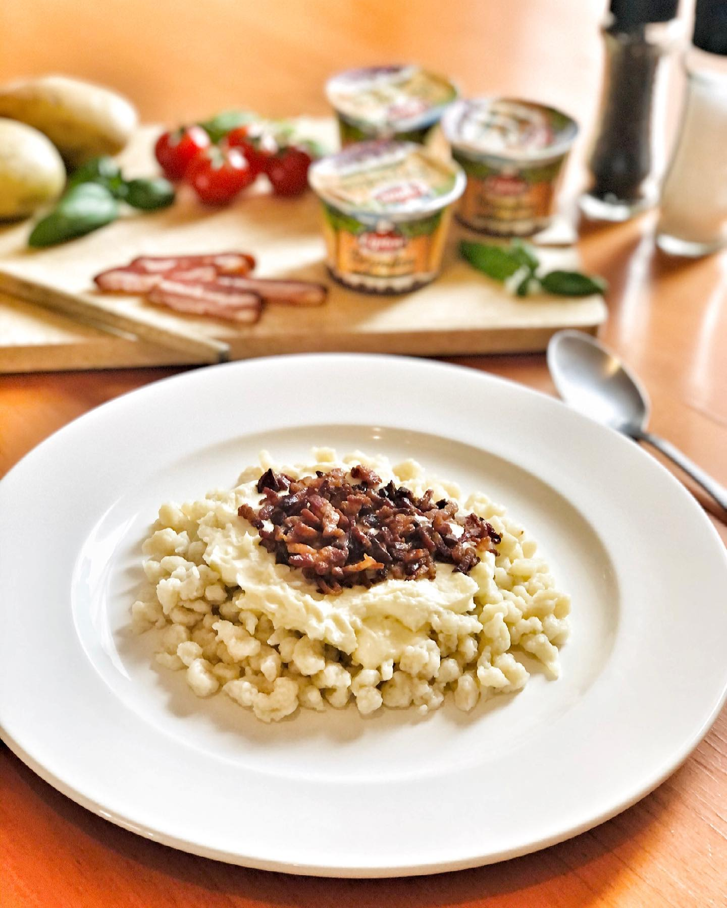

Halušky podľa @_klaudy__ — Normy Jedál
•𝘈𝘴 𝘢 ,,𝘱𝘳𝘰𝘱𝘦𝘳” 𝘴𝘭𝘰𝘷𝘢𝘬𝘪𝘢𝘯 𝘐 𝘴𝘩𝘰𝘶𝘭𝘥 𝘮𝘢𝘬𝘦 𝘰𝘶𝘳 𝘯𝘢𝘵𝘪𝘰𝘯𝘢𝘭 𝘧𝘰𝘰𝘥 (𝘋𝘶𝘮𝘱𝘭𝘪𝘯𝘨𝘴 𝘸𝘪𝘵𝘩 𝘴𝘩𝘦𝘦𝘱’𝘴 𝘤𝘩𝘦𝘦𝘴𝘦) 𝘸𝘩𝘦𝘯 𝘐’𝘮 𝘢𝘣𝘳𝘰𝘢𝘥.
𝘚𝘰 𝘩𝘦𝘳𝘦 𝘸𝘦 𝘨𝘰! 🇸🇰
#food #slovakia #nationalslovakfood #kitchen #instaslovakia🇸🇰 #sk #slovenskakuchyna #bryndzovéhalušky #enjoy #dumplings #bryndza #liptov #cheese #cooking #slanina #bryndzacheese #foodporn #homemade #halusky #tasty #bacon #homecooking #recipe #foodphotography #foodstagram #eat #yummy #lunch #foodiesofinstagram #homefood 🍴